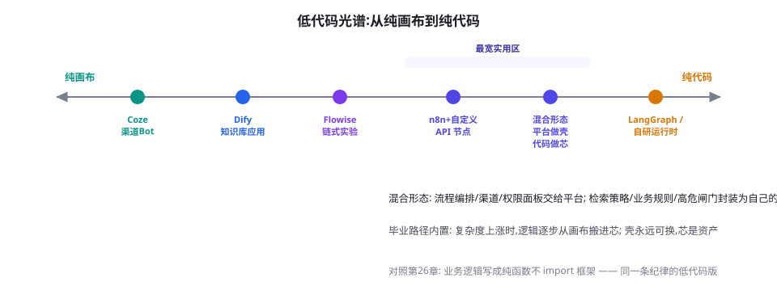

低代码平台：Dify、Coze、n8n 与 Flowise
不是每个 Agent 都需要写代码。本章横评四大低代码/无代码平台的真实能力边界、各自的甜蜜区与锁定风险，并给出「何时告别低代码」的毕业检查单。
版图：四类平台基因
「低代码 Agent 平台」不是一个同质市场，四大代表各有基因：
| 平台 | 基因 | 强项 | 短板 | 部署形态 |
|---|---|---|---|---|
| Dify | LLM 应用开发平台 | 知识库 RAG 完整、提示词 IDE、应用模板丰富、开源自托管 | 复杂控制流仍需外部代码 | 开源（主流）+ 云 |
| Coze（扣子） | 消费级 Bot 平台 | 上手最快、插件/工作流/多 Bot 协作、发布到多渠道（飞书/微信等） | 定制深了受限；数据在平台侧 | 云服务为主 |
| n8n | 通用自动化(节点流) | 400+ 系统集成的胶水能力、AI 节点融入既有自动化 | LLM 深度特性(评测/知识库管理)偏弱 | 开源自托管 + 云 |
| Flowise | LangChain 可视化 | 拖拽拼装 LLM 链/Agent、与 LangChain 生态同构 | 复杂度上不封顶时仍是 LangChain 的坑 | 开源自托管 |
甜蜜区：低代码真正擅长的四类任务
- 知识库问答（Dify/Coze 最强）：文档上传 → 自动分块嵌入 → 问答应用 → 渠道发布。这条「企业知识库」的标准链在低代码平台上是「半小时上线」的成熟功能——自研等价物是一周的工程（第 20、81 章）。
- 内部工具自动化（n8n 最强）：「收到表单 → LLM 分类 → 写入表格 → 通知群」这类胶水流程——n8n 的存量集成能力（邮件、表格、CRM、Webhook）让它成为自动化的既有玩家加装 AI 的首选。
- 渠道型对话 Bot（Coze 最强）：要在飞书/微信/网页多渠道部署、需要插件生态（搜索/绘图）的消费级 Bot——Coze 的渠道与插件矩阵省掉大量接线工程。
- 概念验证与教学（Flowise/Dify）：把第 6-23 章的概念（链、记忆、Agent）可视化地拼给初学者——可视化是最好的教学工具之一。
深看一个场景：Dify 的知识库问答全流程
以「企业知识库问答」为例走一遍 Dify 的完整链路，你会看到第 20 章所有概念的可视化对应物：① 建知识库——上传文档（PDF/Word/网页），平台处理分块与嵌入（可调分块长度、重叠、检索方式：向量/全文/混合）；② 建应用——选「知识库问答」模板，编排层是可视化画布：开场白、检索设置（Top-K、Rerank 开关）、引用与归属开关；③ 编排提示词——内置提示词 IDE，把系统提示词、变量、知识库引用组织成最终 Prompt；④ 发布——生成网页、API、或嵌入脚本。第 20 章「离线索引 + 在线检索生成」双管线在这里全部存在——低代码平台并没有发明新东西，它把成熟管线做成了「可配置」。对照你已学的知识做三次「专业级检查」：分块策略是否结构感知（第 20 章）？检索是否混合 + 重排（性价比最高的升级）？提示词是否有「承认未知」纪律？——三次检查过后，同一个平台在你手里能做出比「默认配置用户」好得多的效果。这就是本书方法论的红利：平台越普及，懂机制的人优势越大——因为大家用一样的工具，差异全在参数与提示词背后的一层。

from fastapi import FastAPI
from pydantic import BaseModel
app = FastAPI()
class Query(BaseModel):
question: str
user_id: str # 平台侧传入,用于权限过滤
top_k: int = 5
@app.post("/search")
def search(q: Query):
"""自定义检索节点: 平台画布上只是普通 HTTP 调用,
里面装着平台给不了的领域逻辑"""
acl = get_user_acl(q.user_id) # 权限过滤(第20章)
rewritten = rewrite_query(q.question) # 查询改写(第21章)
hits = hybrid_retrieve(rewritten, acl, top_k=q.top_k)
reranked = rerank(q.question, hits)
if not enough(reranked): # 置信闸门
return {"answer": None,
"fallback": "insufficient",
"hint": "建议转人工"}
return {"answer": synthesize(q.question, reranked),
"citations": [h.meta for h in reranked[:3]]}
# 平台上: 添加 HTTP 节点 → POST 到此服务 → 把 answer 填进回复
# 未来毕业: 这份代码原样搬走,平台层随时可换这个「芯」里装着四层你在前面章节学过的逻辑（权限、改写、混合检索、置信闸门）——每层在第 17-22 章都有完整出处。低代码平台调用它时只看到一个普通的 HTTP 节点；而你保留了随时带走全部核心逻辑的自由。
n8n 场景深看：给既有自动化加装 AI
很多企业接触 Agent 的真实入口不是「做一个 Bot」，而是「给跑了三年的 n8n/Zapier 自动化流程加一步智能判断」。这类场景里 n8n 的 AI 节点（LLM Chain、AI Agent、向量库节点）直接插入既有流程：经典配方是「邮件进件 → AI 节点分类与抽取 → 按类别路由到不同分支 → 表格/CRM/IM 动作」。这里的关键认知是：LLM 节点只是流程图上的一个普通节点——它的输入输出遵循 n8n 的数据流模型（JSON item 流），错误处理、重试、分支全部复用平台既有机制。对已经有自动化资产的团队，这是成本最低的 AI 落地路径：不需要新平台、不需要新监控、AI 的可靠性问题被「节点失败 → 走人工分支」的既有兜底机制天然吸收。给这类团队的架构建议：AI 节点保持「薄」——只做分类/抽取/摘要等原子任务，把「Agent 式多步推理」放在独立服务里（芯），n8n 只调用其 API——这样 AI 侧的复杂度不会渗进自动化资产，两侧可独立演进。
# ── 表达一: n8n 画布(节点+连线,截图不可考,以 DSL 导出示意) ──
[Webhook] → [AI Classify] → switch(类别) → [写工单] / [回邮件] / [转人工]
# ── 表达二: 低代码平台的流程 DSL(简化示意) ──
flow:
trigger: webhook
steps:
- id: classify
type: ai-node
prompt: "分类客户进件: 退款/咨询/投诉"
output: {category: str}
- id: route
type: switch
on: "{{steps.classify.category}}"
cases: {refund: create_ticket, inquiry: reply_mail, complaint: human}
# ── 表达三: 等价的 Python(第27章风格) ──
async def handle(payload):
cat = await classify(payload["text"])
match cat:
case "refund": await create_ticket(payload)
case "inquiry": await reply_mail(payload)
case "complaint": await escalate_human(payload)三种表达写的是同一件事。对照它们你会发现一个关于抽象的普适规律：DSL 用「声明密度」换「灵活性」——画布最直观但最脆（改动靠拖拽，历史靠平台），DSL 折中（可版本化、可 review），代码最啰嗦但无边界。低代码平台的成熟标志之一，就是「画布 ↔ DSL ↔ API」三态可逆——选平台时，把它能不能导出/导入流程定义当作硬指标，那几乎就是你未来「翻译税」的税率表。
天花板：低代码的四堵墙
第 26 章的「毕业检查单」在本章展开为四堵具体的墙：墙一：复杂控制流——条件分支嵌套、动态循环、子流程复用，画布会变成蜘蛛网（本质：可视化适合拓扑简单的 DAG，不适合程序逻辑）；墙二：测试与版本治理——提示词与流程的 diff、回滚、CI 接入，低代码平台普遍薄弱，改动没有 review 流程；墙三：观测深度——内置 trace 够看单次运行，做不了第 79 章级别的分析（按维度切分、漏斗、归因）；墙四：数据主权与合规——云平台形态下语料与对话在服务商侧，自托管版本（Dify/n8n/Flowise）可缓解但运维成本回归。四堵墙的判断不是「墙高不高」，而是「你的场景会不会撞到」：撞不到（内部工具、渠道 Bot、标准知识库）就安心用低代码，撞得到（复杂业务逻辑、强合规、高定制）就早做迁移打算。
成熟团队的常见形态是「平台 + 自定义节点」：Dify/n8n 都支持调用自定义 API（你的代码服务作为一个节点）——流程编排、渠道管理、权限面板交给平台，核心逻辑（检索策略、复杂业务规则、高危操作闸门）封装在你的 API 里。这个形态的妙处：毕业路径内置——业务复杂度上涨时，往自定义节点里搬逻辑，平台只做壳；壳永远可以换，芯才是资产。第 26 章「业务逻辑写成纯函数」的纪律在这里直接兑现为「芯的可迁移性」。
案例：一个 50 人公司的低代码→混合→自研三级跳
用一条完整的时间线展示本章路径的真实走法（细节匿名）。第一阶段（第 1 个月）：SaaS 公司用 Coze 搭了内部知识库 Bot（产品文档 + FAQ），一周上线，全员使用——低代码甜蜜区的标准落地。第二阶段（第 3~4 个月）：需求长出三个「平台里做不了」的东西：按客户合同定制回答口径（权限与个性化检索）、工单系统联动（查真实订单状态）、回答质量周报（评测）。对策：开 Dify 自托管版替换 Coze，三个需求全部做成自定义 API 节点（芯）——知识库问答的管理界面继续用平台，业务逻辑在芯里用 Python 实现。第三阶段（第 8 个月起）：客户侧正式产品上线，对可用性与可观测性要求提升——检索与编排逻辑整体迁出平台，芯里的代码 + LangGraph 组成正式服务；平台只在「内部工具」场景继续服役。这条三级跳的经验浓缩为一句：每一次升级的动力都来自「真实需求撞到墙」，而不是「技术追新」；每一次升级的成本都被「芯」的边界控制在一到两周。反过来的教训也真实存在：他们同期另一个团队从第一天就用全家桶自研，三个月后发现自己做的知识库问答还不如别人在 Dify 上拖拽两天的——起点选错场景的自研，是另一种形式的绕路。
成本对比：低代码 vs 自研的真实账
| 成本项 | 低代码路径 | 自研路径 |
|---|---|---|
| 初始搭建 | 0.5~2 人天 | 1~4 人周 |
| 月度平台费/运维 | 云: 按量; 自托管: 一台服务器 | 全套基建(网关/沙箱/观测) |
| 改一次流程 | 分钟级(画布拖拽) | 小时级(开发+测试+发布) |
| 复杂需求适配 | 撞墙后被迫迁移(重做) | 持续演进(重构) |
| 观测与评测 | 内置浅层,深度分析需外接 | 完全自主(第 79 章全套) |
治理视角：低代码平台的管理问题
低代码平台在企业里的最大隐患不是技术墙，而是治理真空：因为「人人可搭」，半年后会出现几十个无人认领的「幽灵应用」——没人知道它们调用哪些密钥、访问哪些数据、是否还在被使用。四条治理军规：① 应用台账制——每个应用登记 owner、数据源、密钥用途；② 密钥集中托管——平台配的 API 密钥走统一网关（第 26 章），可随时吊换；③ 模板化起步——发布经过审查的「官方模板」，让业务团队在安全骨架里定制，而不是从空白画布自由发挥；④ 定期清扫——季度盘点，无流量的应用下线归档。低代码的生产力优势只有配上治理纪律才是真实的——否则你只是把「影子 IT」的门槛降到了人人可得。
选型流程：五问定平台
- 用户是谁？非工程师自治 → Coze/Dify；工程师为主 → n8n/Flowise 或直接代码。
- 数据敏感度？不出域是硬约束 → 自托管形态（Dify/n8n/Flowise 开源版），云平台出局。
- 核心是知识库还是流程自动化？知识库 → Dify/Coze；自动化 → n8n；链式实验 → Flowise。
- 要发到哪里？微信/飞书渠道 → Coze 的渠道矩阵；自有产品内嵌 → 开源平台 API。
- 一年后的复杂度预期？大概率撞墙 → 现在就按「平台做壳」设计（自定义节点），或直接上代码。
三个高频疑问
Q：低代码平台做的知识库问答质量能达标吗？能不能达标不取决于平台，取决于第 20 章的功课是否做足：分块策略、混合检索、评测集一个都不能少——在 Dify 里这些照样可配可做。平台与自研的知识库问答质量差距，在「都做了功课」的前提下主要来自三处：检索层的可定制深度（自定义 Reranker/查询改写在平台上受限）、生成层的精细控制（引用格式、拒答策略）、以及评测驱动迭代的便利度（自研接 CI 更顺）。对内部知识问答这类场景，平台的达标率通常令人满意；对外高要求场景则建议混合架构。
Q：Coze 这类平台的数据安全怎么评估？按第 65 章的合规清单过一遍：数据存储位置与加密、是否用于平台方改进服务（训练数据条款——重点看）、日志保留与删除权、渠道集成后的数据流、导出与迁移能力（被锁定时能不能把 Bot 与知识库搬走）。企业敏感场景优先自托管形态；用云平台则把上述条款写进采购评审。
Q：先在低代码上验证，毕业迁移的成本到底多大？取决于「芯」的边界画得如何。任务书里的成本结构：平台内的配置（提示词、知识库设置）需要「翻译」成代码——这是主要工作量，通常数天；封装的芯（自定义 API）零成本搬家；渠道与权限的重建数天。以「芯」边界清晰为前提，总迁移成本约一到两周——这正是混合策略把「重做税」压到「翻译税」的价值所在。
平台做壳、代码做芯的混合形态，正在催生一个中间标准件品类：「可移植的 Agent 定义」。MCP（下一章）解决工具的互操作，而 Agent 本身的定义可移植（声明、提示词、流程）也在出现多种尝试（YAML 化的 Agent 配置、LangGraph Platform 的部署格式、各平台的导入导出）。理想态是：Agent 的「芯」成为一种可部署单元，平台只是它的运行环境之一——就像 Docker 之于应用。这个趋势尚未收敛，但方向明确：今天写芯的时候，尽量用「配置 + 纯代码」表达 Agent 定义，避免依赖特定平台的私有 DSL——这会让你的芯在未来任何标准件生态里都是一等公民。
本章的认知收获：低代码是一面镜子
用一个反直觉的观察收束：低代码平台最大的价值，也许不是「让你不写代码」，而是「逼你说清楚你的 Agent 到底由什么组成」。画布上的每个节点、每个连线、每个配置项，都是对你的系统架构的显式化追问——检索用什么？Top-K 多少？提示词的变量从哪来？失败走哪条边？在代码里，这些问题可以被含糊地写过去；在画布上，它们是不填就断线的格子。因此即使你的团队全是资深工程师，在项目初期用低代码平台「画一遍」系统，依然是一台强大的「架构显影机」——画布上的每个含糊处，都是还没想清楚的决策。从这个意义上说，本章与第 26 章的选型决策树互为表里：决策树帮你「选」，画布帮你「显影」，而「芯」帮你保留选择的自由。
平台细节补遗：四个容易踩的配置
无论选哪个平台，这四个配置点的新手错误率最高。① 检索方式默认值——多数平台默认「向量检索」，企业知识库请改「混合 + Rerank」（第 20 章的性价比之王，平台都支持，只是不在默认项里）。② 知识库的「自动分段」——默认按固定长度切，Markdown 类语料请改结构感知/父子分段（若平台支持），表格类先转 Markdown 再入库。③ 开场白与推荐问题的「提示词泄漏」——为了演示效果写的花哨开场白会进入每轮上下文，长度要克制。④ 引用展示的粒度——默认引用到文档级，用户无法核验；配置到「段落级 + 跳转锚点」能显著提升信任（第 20 章的引用协议）。四个配置的共同点：平台都给了选项，但默认值是「演示友好」而非「生产正确」——上线前的检查清单里应该有它们的名字。
本章是框架篇里唯一不需要「跑通示例」的一章——低代码的价值本来就在于不写代码。替代性的动手作业：挑你熟悉的任一平台，在 30 分钟内完成「上传一份文档 → 建知识库 → 配置混合检索 → 发布问答应用 → 问三个问题」的完整闭环，然后对照第 20 章的知识给它做「专业级检查」并至少改进一处。这个作业的意义在于体会「会机制的人用低代码」与「不会机制的人用低代码」的差距——那个差距，就是本书前半部分给你的全部资产的变现时刻。
还有一条给「决策者」的特别提醒：低代码平台引来的「业务自治」是一把双刃剑，它同时意味着质量责任从工程团队转移到业务团队。知识库回答错了，以前可以问责工程师「系统没做好」，现在要问责内容 Owner「语料没管好、配置没调对」——组织必须同步建立新的责任框架（语料维护责任人、回答质量抽检机制、错误反馈通道），否则低代码的敏捷会以质量失控为代价。技术选型的会议里，请把这张责任表放在成本表的旁边——它们同样是选型的输入。
通往下一章：从「平台孤岛」到「协议互联」
本章的四个平台有一个共同的结构性限制：每个平台都是一个「工具与能力的孤岛」——你在 Dify 里写的工具、Coze 里配的插件、n8n 里的集成，彼此互不相通，与你的代码系统也不互通。每换一个平台，「教 Agent 用工具」的工作就要重来一遍。这个痛点的行业解法是协议层——MCP 与 A2A（下一章的主角）：工具写一次（MCP Server），任何支持协议的平台与框架都能挂载；Agent 之间互认（A2A），跨平台协作成为可能。低代码平台们也正在快速拥抱这些协议（Dify、n8n、Coze 都已支持 MCP 接入）——这意味着「平台做壳、代码做芯」的混合架构将获得更结实的连接件：芯以 MCP Server 的形态存在，成为所有平台共享的能力库。带着这个预告进入下一章——它是整个框架篇的技术制高点，也是 Agent 生态从「孤岛」走向「大陆」的关键一块。
再补一条面向「教育者」的视角，因为低代码平台在教学中有一特殊地位：它是把第 1-25 章的概念「可视化」的最佳教具。把第 15 章的 Agent Loop 在 Dify 的画布上拼出来，把第 20 章的 RAG 管线在知识库配置里指认出来，把第 24 章的编排在工作流分支里画出来——概念从抽象文字变成可拖拽的盒子，学习曲线会陡然变缓。本书的多位目标读者（转行者、学生）从这里入门完全可行：先用平台建立「体感」，再用本书建立「机制」，最后用代码框架建立「自由」——三段式路径的每一环，本书都已为你备好对应的章节。
最后校准一次预期：本章的「横评」刻意没有给出「平台评分卡」式的结论——这个市场的迭代速度（月级功能更新、季度级格局变化）会让任何评分卡迅速过时。真正稳定的是本章给的「选型思维」：基因匹配（平台基因 × 场景核心）、边界预判（四堵墙）、混合策略（壳与芯）、治理配套（台账与责任）。这四个思维件加起来，比任何一次性的评分卡更能抵抗时间——就像第 26 章说的：把资产沉淀在判断力里，而不是某个框架的熟练度里。
一个实用的小贴士结束本章：无论选哪个平台，先把「评测」跑起来再优化「配置」——平台的内置测试面板足够跑第 13 章的最小评测（30 个问题 + 人工/裁判打分）。先有分数，再调参数和提示词；顺序反了，你会在画布上无限漂移。这条建议与全书一致：评测是一切优化的方向盘，低代码也不例外。
如果只能记住本章一句话：低代码不是「低配版的开发」，而是「另一种表达架构的语言」——它的画布逼你显式化每一个决策，它的天花板标出复杂度的市场价，它的壳与芯划出资产与租赁的边界。会写代码的人善用它做显影与验证，不写代码的人借它直达生产力——各得其所，就是这块光谱存在的意义。
与团队的沟通视角再补一条实用观察：低代码画布是「向非技术干系人对齐」的神器。需求评审会上，把画布投屏——业务方可以指着节点说「这一步不该自动发邮件」，这种指认的沟通效率十倍于文字描述；同样的对齐在代码里需要流程图工具与文档同步的额外维护。因此即使最终用代码实现，「先在画布上对齐、再翻译成代码」的两步法在跨职能团队里是实打实的提效手段——低代码的又一个「隐形价值」，它对齐的不是机器，是人。
最后，为即将进入协议层的读者备一句过渡语：低代码平台教我们「工具的接入成本决定生产力」，协议层教我们「工具的接入标准决定生态」。下一章的 MCP 正是把「接入成本」与「接入标准」统一起来的那次行业级尝试——理解了本章的孤岛之痛，你会在下一章读到真正的解法。
本章小结
- 四平台四种基因：LLM 应用平台（Dify）、渠道 Bot（Coze）、自动化胶水（n8n）、链式可视化（Flowise）。
- 甜蜜区四类：标准知识库、内部自动化、多渠道 Bot、概念验证。
- 四堵墙：控制流、测试治理、观测深度、数据主权——撞得到就早做打算。
- 混合策略最优：平台做壳、代码做芯（自定义 API 节点），毕业路径内置。
- 五问选型：用户、数据敏感度、核心任务、发布渠道、一年后预期。
- 治理军规四条：应用台账、密钥集中、模板化起步、季度清扫——低代码的生产力必须配治理纪律。
自测题
- 把你当前的一个真实需求走一遍五问选型流程，写出每问答案与最终选择。
- 四堵墙中你的场景最先撞到哪一堵？撞墙的具体信号会是什么？
- 「芯」的封装边界怎么画？列出你会放进自定义节点的三类逻辑。
参考文献与延伸阅读
- Dify (2024). Dify 官方文档. docs.dify.ai; github.com/langgenius/dify
- Coze/扣子 (2024). 扣子官方文档. coze.cn/docs
- n8n (2024). n8n AI 工作流文档. docs.n8n.io
- Flowise (2024). Flowise 文档. docs.flowiseai.com